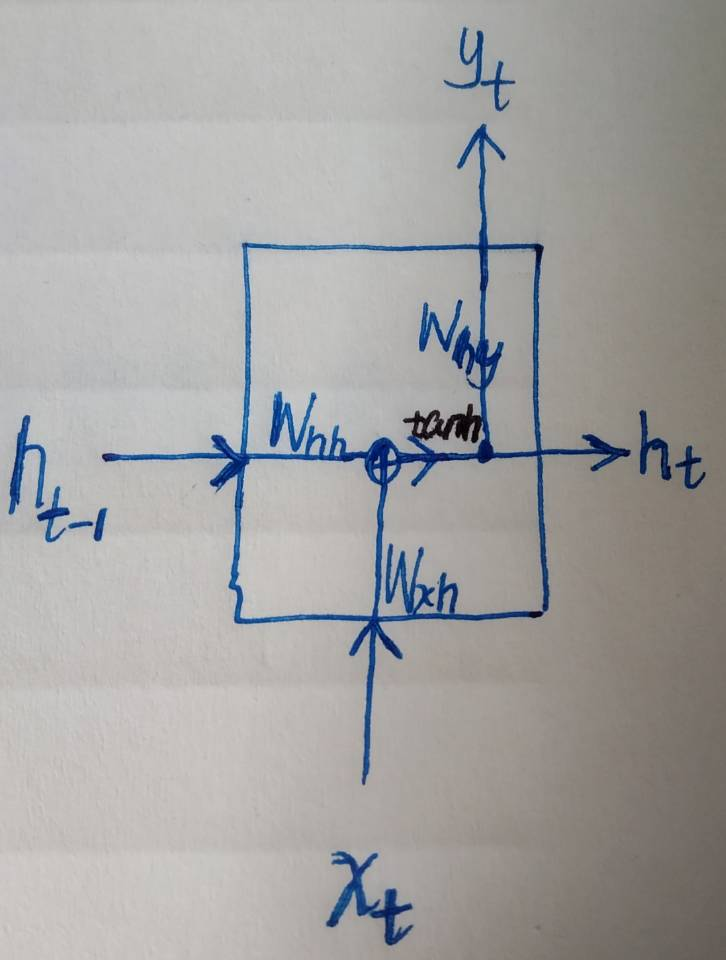
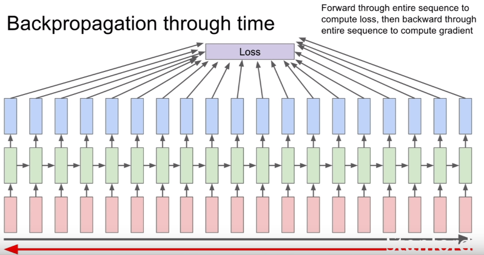
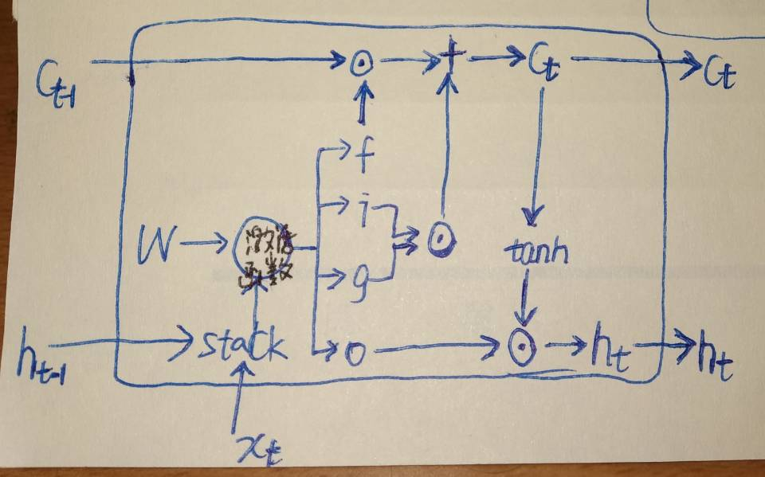
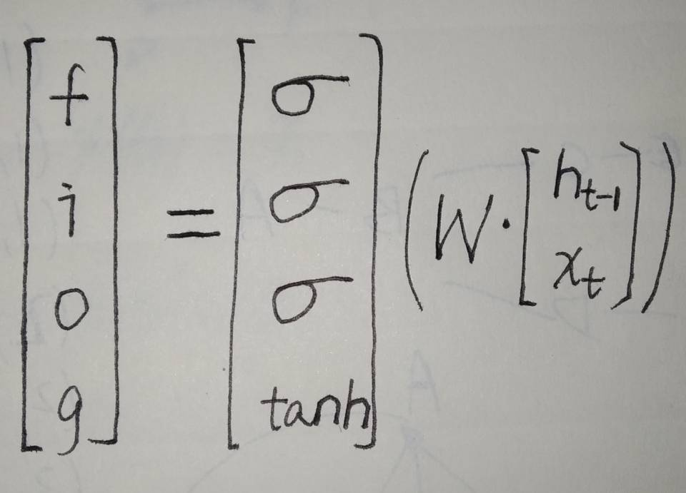
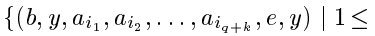
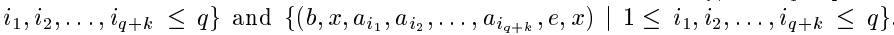

使用机器学习技术处理输入为基于时间的序列或者可以转化为基于时间的序列的问题时，我们可以对每个时间步采用递归公式，如下，We can process a sequence of vector x by applying a recurrence formula at every time step：
ht = fW( ht-1，xt )
其中xt 是在第t个时间步的输入(input vector at time step t)；ht 是新状态量(new state)，蕴含着前t个时间步的信息，在处理完xt后产生；ht-1 是前一个状态量(old state)，蕴含着前t-1个时间步的信息，在处理完xt-1后产生；fW 是参数为W的从输入到输出的连接，在每个时间步都相同，反向传播对它的参数W进行优化。
original的RNN是这样的(以下简称vanilla RNN)：
对于每个时间步：
ht = tanh(Whh • ht-1 + Wxh • xt) 或者用矩阵表示——ht = tanh( W • [ht-1，xt]T )
yt= Why • ht
图示：（当然描述它的图有很多，我自己画的这个比较直观易懂）

训练模型优化参数的时候通过基于时间的反向传播(BPTT)进行优化，这里不废话了，一个图就说明白了：(来自斯坦福Lecture 10 | Recurrent Neural Networks)

当时间步数大的时候也就是时间步数多的时候，vanillaRNN便不可避免的遇到了梯度爆炸(gradient exploding)与梯度消失(gradient vanishing)。如果参数大于1，backprop累乘下去，就会导致梯度很大——>+∞；如果参数小于1，backprop累乘下去，就会导致梯度很小——>0。为了对付这个问题，有人基于vanillaRNN设计了新的结构，LSTM与GRU相继被提出来。
先看LSTM，vanillaRNN只有一个时序状态h，而LSTM有两个分别是h和c。LSTM将vanillaRNN的每个时序块改成一个cell，对于每个cell输入分别是xt，ht-1，ct-1，输出是ct和ht 。结构图如下：

在LSTM的cell内部有四个门(gate)分别是f，i，g，o，
f：whether to erase cell
i：whether to write to cell
g：how much to write to cell
o：how much to reveal cell
数学表达是这样的：

ct = fꙨ ct-1 + i Ꙩ g
ht = o Ꙩ tan(ct)
反正让我看一眼结构图就记住LSTM结构，呃，悬，但是这个矩阵式子一扔立马就印刻在脑子里了。
前向传播弄明白了，那反向传播呢？
xxxxxxxxxxxxxxxxxxxxx
>>hochriter做了六个实验，分别是：(不好意思我只看了其中1，2，4三个实验QAQ)
实验1，the embedded Reber grammar。聚焦于递归单元的标准基准测试(a standard benchmark test for recurrent nets)。Reber grammar是字符串生成器，实验要用LSTM来学习它。如果不知道什么是Reber grammar可以看这里：https://willamette.edu/~gorr/classes/cs449/reber.html，实验使用了7 input units & 7 output units，除了h门[-1,1]和g门[-2，2]，其他的sigmoid激活后都在[0,1]的范围。除了output门的bias分别初始成-1，-2，-3，其他权重初始都是[-0.2,0.2]。学习率尝试了0.1，0.2，0.5。训练集和测试集分别有256个字符串样本，均是随机生成且免重。实验使用了三组不同的训练测试集。该实验说明了output门的重要性。Learning to store the first T or P should not perturb activations representing the more easily learnable transitions of the original Reber grammar。
实验2，noise-free and noisy sequences。
——"noise-free sequences with long time lags".有p+1个可能的输入符号，我们用a1,......,ap-1,ap=x,ap+1=y来表示。每个元素用p+1维的one_hot向量表示。有着p+1个输入单元和p+1个输出单元的网络模型序列地每个时间步读一个符号，并预测下一个符号。每个时间步都产生误差信号error signal。训练集仅由两个非常相似的序列(y , a1,......,ap-1 , y)和(x , a1,......,ap-1 , x)组成，每个序列被选择的概率相等。为了预测出最后一个元素，网络模型必须学会经过p个时间步依旧存储着第一个元素的信息。作者把LSTM与RTRL和BPTT以及Neural Sequence Chunker作比较，权重初始化[-0.2,0.2]，训练使用了5百万个sequence presentations。训练好之后，当序列很长时，BPTT和RTRL都失败了，只有LSTM和CH成功。p=100的时候，2 -net sequence chunker成功了三分之一的尝试，而LSTM完美通过测试。
——"no local regularities"，作者说，上面的实验中chunker有时成功预测了序列的最后元素，是因为学到了一些可预测的局部规则。那我给换个更难的训练集，看看谁还能继续牛逼。We remove compressibility by replacing the deterministic subsequence() by a random subsequence of length p-1 over the alphabet a1,a2,...,ap-1. We obtain 2 sets of sequences {(y , ai1,......,aip-1 , y)|1<=i1,i2,...,ip-1<=p-1} and {(x , ai1,......,aip-1 , x)|1<=i1,i2,...,ip-1<=p-1} 。 结果chunker败下阵来，LSTM笑到了最后(此处滑稽脸.jpg)。说明了LSTM的成功根本就不需要local regularities。
——"very long time lags——no local regularities".这个是实验2的极限测试了。在LSTM出现之前还没有循环神经网络的模型能完美通过这个测试。有p+4个可能的输入符号，分别为a1,......,ap ,ap+1=e,ap+2=b,ap+3=x,ap+4=y。我们把a1,......,ap 称为"distractor symbols"。网络模型有p+4个输入，2个输出。训练样本序列从这两个集合中随机选取。随机生成长度q+2的序列前缀，后续元素有9/10的可能性随机生成(不包括b,e,x,y)，1/10的可能性为e。误差信号只在序列末尾产生。为了预测最后一个元素，网络模型必须要学会存储第二个符号经过至少q+1个时间步，直到它遇到trigger symbol e。如果训练好的模型在处理10000个连续的随机选择的输入序列时，两个输出单元对于最后元素的预测偏差都小于0.2，那么就认为成功通过测试。模型权重初始化[-0.2,0.2]。参数无bias。h和g门的sigmoid输出分别归一到[-1,1]和[-2,2]。学习率为0.01。最小的time lag设为q+1，因为短的训练序列对长的测试序列的归类无益。当然实验结果肯定是nice，要不也不拿来吹逼了。实验总结时说了"干扰因素的影响“——increasing this frequency decreases learning speed, an effect due to weight oscillations caused by frequently observed input symbols。
实验3，noise and signal on same channel。
实验4，adding problem。处理离散表示的连续值的时延问题。
实验5，multiplication problem
实验6，temporal order
>>作者本人所阐述的LSTM的局限性：
Reference：
1.《long short term memory》，Hochreiter&Schmidhuber，1997
2. Stanford CS231n